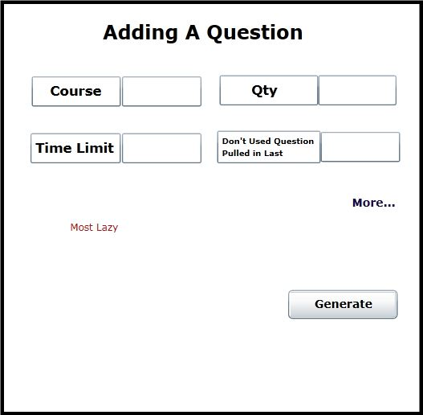
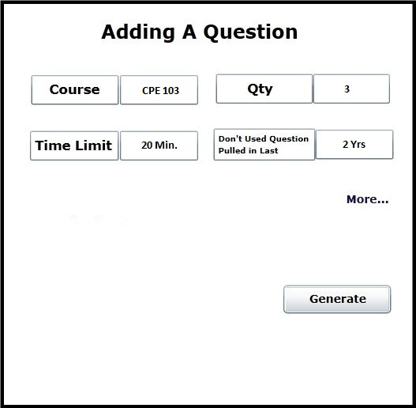

Once the user clicks the add a question button on the generating a test front page, a new dialog is opened. This dialog enables the user to add a question or multiple questions to the test in two levels of laziness. The first level, or most lazy level, is discussed in this section. An advanced level is discussed in section 2.2.2.
By default the dialog opens in the most lazy mode. This is shown in Figure 2.2.2

Figure 2.2.2: The dialog where the user can add a question or multiple questions to the test he is building. By default the most lazy mode is opened.
This mode allows for simplicity and easy test generation for the user. There are 4 fields in this mode that must be filled in (by clicking and typing). In the top right corner is the course. This is the course, as listed in the question database, the Test Tool will pull questions from. Directly to the right of that is the qty field. This is the number of questions the test is to have. Below course is time limit. This is how long the user wants the test to be. To the right of the time limit is a drop down menu field where the user chooses a time range of passed use for the question the test generator will not choose questions from.
Upon clicking the generate button at the bottom of the dialog the test generator will select questions from the database that match all the criteria (always matching the qty parameter exactly).
An example is shown in figure 2.2.2.1 where the qty is 3, the course is CPE 308, there is a 20 min. time limit, and questions are not to be pulled that have been used in the last 2 years.

Figure 2.2.2.1: An example of basic generation with all required fields filled in.
The front page of the generating a test section will be updated as well when the user clicks Generate. In the previous example, the first two CPE 308 questions are short answer and the third is a coding. Any type of question would result in the same behavior while using the basic form of generation.
Figure 2.2.2.2: Front page with 3 added questions.
Rules the test generator will follow